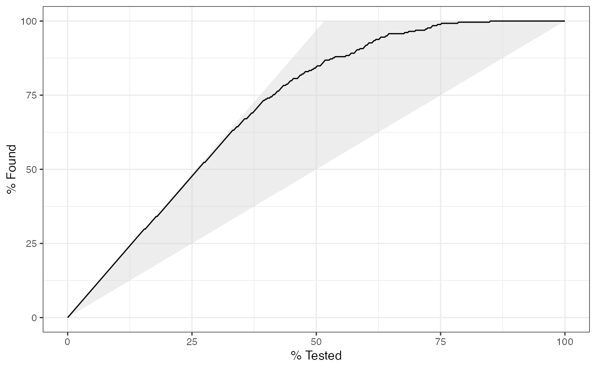
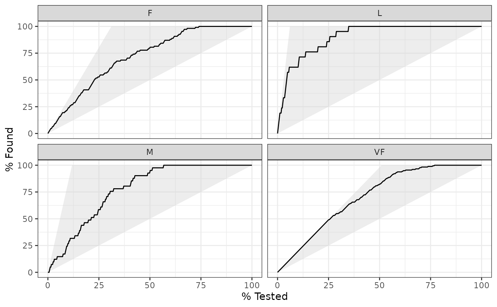
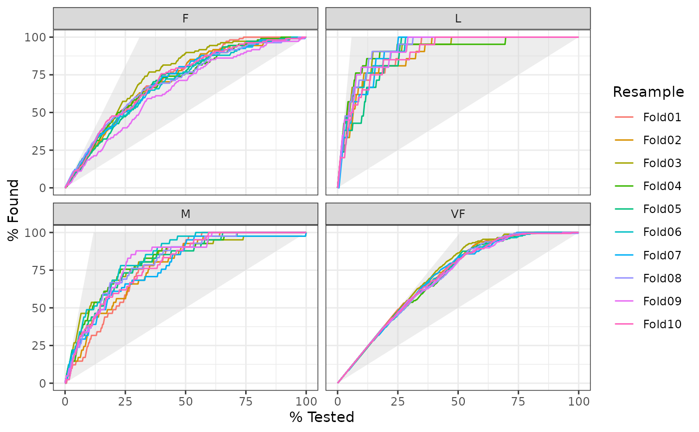

gain_curve() constructs the full gain curve and returns a
tibble. See gain_capture() for the relevant area under the gain curve.
Also see lift_curve() for a closely related concept.
gain_curve(data, ...) # S3 method for data.frame gain_curve(data, truth, ..., na_rm = TRUE) autoplot.gain_df(object, ...)
| data | A |
|---|---|
| ... | A set of unquoted column names or one or more
|
| truth | The column identifier for the true class results
(that is a |
| na_rm | A |
| object | The |
A tibble with class gain_df or gain_grouped_df having
columns:
.n - The index of the current sample.
.n_events - The index of the current unique sample. Values with repeated
estimate values are given identical indices in this column.
.percent_tested - The cumulative percentage of values tested.
.percent_found - The cumulative percentage of true results relative to the
total number of true results.
There is a ggplot2::autoplot()
method for quickly visualizing the curve. This works for
binary and multiclass output, and also works with grouped data (i.e. from
resamples). See the examples.
The greater the area between the gain curve and the baseline, the better the model.
Gain curves are identical to CAP curves (cumulative accuracy profile). See the Engelmann reference for more information on CAP curves.
The motivation behind cumulative gain and lift charts is as a visual method to determine the effectiveness of a model when compared to the results one might expect without a model. As an example, without a model, if you were to advertise to a random 10\ to capture 10\ advertised to your entire customer base. Given a model that predicts which customers are more likely to respond, the hope is that you can more accurately target 10\ \>10\
The calculation to construct gain curves is as follows:
truth and estimate are placed in descending order by the estimate
values (estimate here is a single column supplied in ...).
The cumulative number of samples with true results relative to the entire number of true results are found. This is the y-axis in a gain chart.
If a multiclass truth column is provided, a one-vs-all
approach will be taken to calculate multiple curves, one per level.
In this case, there will be an additional column, .level,
identifying the "one" column in the one-vs-all calculation.
There is no common convention on which factor level should
automatically be considered the "event" or "positive" result.
In yardstick, the default is to use the first level. To
change this, a global option called yardstick.event_first is
set to TRUE when the package is loaded. This can be changed
to FALSE if the last level of the factor is considered the
level of interest by running: options(yardstick.event_first = FALSE).
For multiclass extensions involving one-vs-all
comparisons (such as macro averaging), this option is ignored and
the "one" level is always the relevant result.
Engelmann, Bernd & Hayden, Evelyn & Tasche, Dirk (2003). "Measuring the Discriminative Power of Rating Systems," Discussion Paper Series 2: Banking and Financial Studies 2003,01, Deutsche Bundesbank.
Compute the relevant area under the gain curve with gain_capture().
Other curve metrics:
lift_curve(),
pr_curve(),
roc_curve()
# --------------------------------------------------------------------------- # Two class example # `truth` is a 2 level factor. The first level is `"Class1"`, which is the # "event of interest" by default in yardstick. See the Relevant Level # section above. data(two_class_example) # Binary metrics using class probabilities take a factor `truth` column, # and a single class probability column containing the probabilities of # the event of interest. Here, since `"Class1"` is the first level of # `"truth"`, it is the event of interest and we pass in probabilities for it. gain_curve(two_class_example, truth, Class1)#> # A tibble: 501 x 4 #> .n .n_events .percent_tested .percent_found #> <dbl> <dbl> <dbl> <dbl> #> 1 0 0 0 0 #> 2 1 1 0.2 0.388 #> 3 2 2 0.4 0.775 #> 4 3 3 0.6 1.16 #> 5 4 4 0.8 1.55 #> 6 5 5 1 1.94 #> 7 6 6 1.2 2.33 #> 8 7 7 1.4 2.71 #> 9 8 8 1.6 3.10 #> 10 9 9 1.8 3.49 #> # … with 491 more rows# --------------------------------------------------------------------------- # `autoplot()` library(ggplot2) library(dplyr) # Use autoplot to visualize # The top left hand corner of the grey triangle is a "perfect" gain curve autoplot(gain_curve(two_class_example, truth, Class1))# Multiclass one-vs-all approach # One curve per level hpc_cv %>% filter(Resample == "Fold01") %>% gain_curve(obs, VF:L) %>% autoplot()# Same as above, but will all of the resamples # The resample with the minimum (farthest to the left) "perfect" value is # used to draw the shaded region hpc_cv %>% group_by(Resample) %>% gain_curve(obs, VF:L) %>% autoplot()